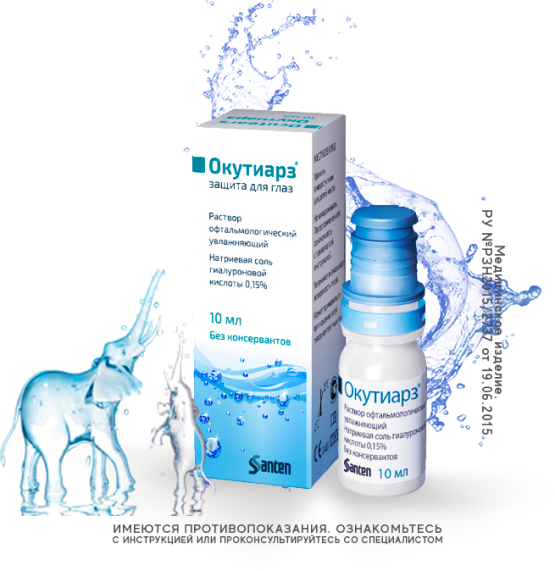
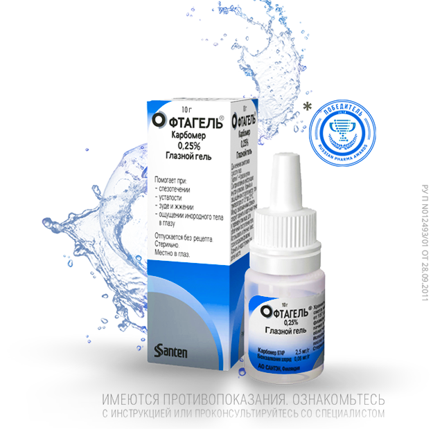
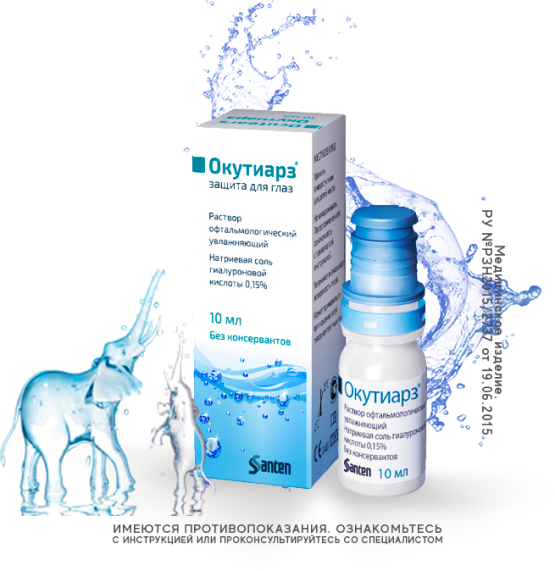
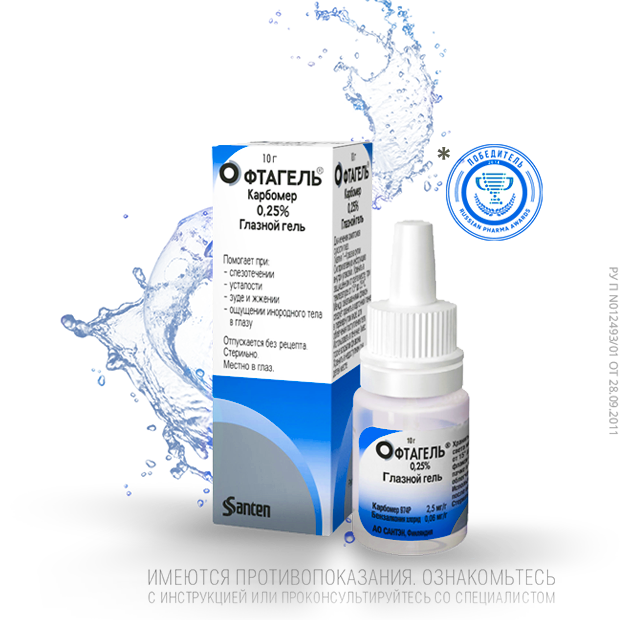

Двадцать первый век невозможно представить без современных технологий. У каждого человека в ежедневном пользовании имеется как минимум несколько устройств: мобильный телефон, планшет, ноутбук, телевизор и др. Именно ежедневный контакт с гаджетами может вызвать развитие одного из самых распространенных заболеваний глаз синдрома «сухого глаза» (ССГ).
Другими причинами возникновения синдрома «сухого глаза» можно назвать сухой воздух (отопление зимой, кондиционер летом), возраст старше 50 лет, длительное использование контактных линз, применение капель с консервантами, хронические общие заболевания (диабет, ревматоидный артрит), заболевания глаз (блефарит, аллергический конъюнктивит, глаукома) и прием гормональных препаратов у женщин. Ситуацию ухудшает проблемная экологическая обстановка с вредными выбросами от заводов и фабрик, табачным дымом и глобальным потеплением.
Частыми признаками ССГ являются сухость глаз, ощущение песка или инородного тела, жжение, слезотечение, дискомфорт и зуд. Чтобы помочь нашим глазам оставаться здоровыми и защитить их от синдрома «сухого глаза», нужно использовать слезозаменители.
Что такое
слезозаменители?
Слезозаменители, или искусственные слезы – это увлажняющие глазные капли, которые восполняют дефицит собственной слезы, вызванный либо избыточным испарением или недостаточной ее выработкой.
Они используются в качестве терапии синдрома «сухого глаза», облегчают сухость и предотвращают дискомфорт при моргании, устраняют ощущение песка в глазах. Некоторые слезозаменитиели могут применяться для более комфортного использования контактных линз или для восстановления глаз после операции (ЛАСИК, ФРК, экстракция катаракты).
 



Как выбрать слезозаменители?
Алгоритм выбора искусственных слез:
Слезозаменители — обобщенный термин, включающий в себя широкую группу средств различных по составу и ряду качеств.
По степени вязкости:
Слезозаменители низкой и средней вязкости (относительно жидкие формы) удобнее применять в течение дня, а гели наносить на ночь.
По компонентам в составе:
Врачи советую отдавать предпочтение бесконсервантным препаратам, так как они не оказывают токсичного воздействия на глазную поверхность при длительном применении.
По совместимости с контактными линзами:
Врач-офтальмолог назначает лечение в зависимости от степени выраженности синдрома «сухого глаза». Он обращает внимание на выраженность симптомов, состояние слезной пленки и наличие повреждений глазной поверхности.
При назначении препаратов пациенту, врач всегда учитывает индивидуальную переносимость компонентов в составе препарата и его личным предпочтениям в частоте использования заменителя слезы. Выбор препарата и длительность курса лечения могут варьироваться в зависимости от вышеперечисленных условий.
В качестве терапии синдрома сухого глаза можно воспользоваться следующими препаратами:
| Выраженность жалоб ССГ | Изменение слоев слезной пленки (определяет офтальмолог на приеме) | Дополнительные факторы | Капли |
|---|---|---|---|
| СУХОСТЬ ГЛАЗ ПОСТОЯННО, В ТЕЧЕНИЕ ВСЕГО ДНЯ, ДАЖЕ С УТРА | Изменение не только водного, но и липидного слоя |
ПРИЗНАКИ ДИСФУНКЦИИ МЕЙБОМИЕВЫХ ЖЕЛЕЗ ФАКТОРЫ РИСКА В АНАМНЕЗЕ
|
КАТИОНОРМ |
| СУХОСТЬ ГЛАЗ ЭПИЗОДИЧЕСКИ, ЧАЩЕ БЛИЖЕ К ВЕЧЕРУ, ПОСЛЕ НАПРЯЖЕННОЙ ЗРИТЕЛЬНОЙ РАБОТЫ |
Изменение водного слоя |
|
ОКУТИАРЗ® |
| СУХОСТЬ ГЛАЗ ЭПИЗОДИЧЕСКИ, ЧАЩЕ БЛИЖЕ К ВЕЧЕРУ, ПОСЛЕ НАПРЯЖЕННОЙ ЗРИТЕЛЬНОЙ РАБОТЫ |
Изменение водного слоя |
|
ОФТАГЕЛЬ® |
Слезозаменители – это препараты, разработанные для обеспечения комфорта глаз и компенсации нехватки естественного увлажнения. Они борются с симптомами «сухого глаза», сводят к минимуму риск осложнений ССГ и помогают восстановиться тканям глазной поверхности.
Правильно подобранные капли – залог здоровых глаз! Перед применением проконсультируйтесь с врачом или фармацевтом.